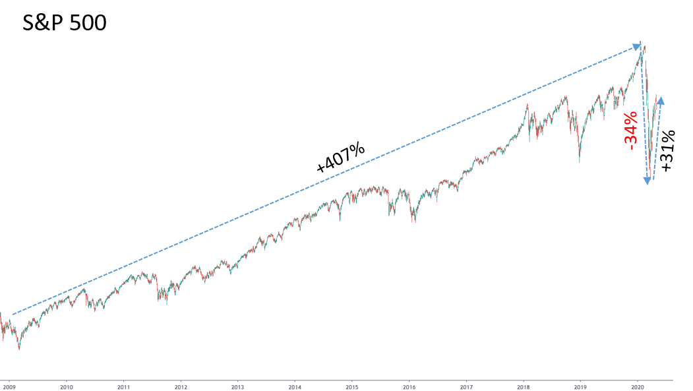
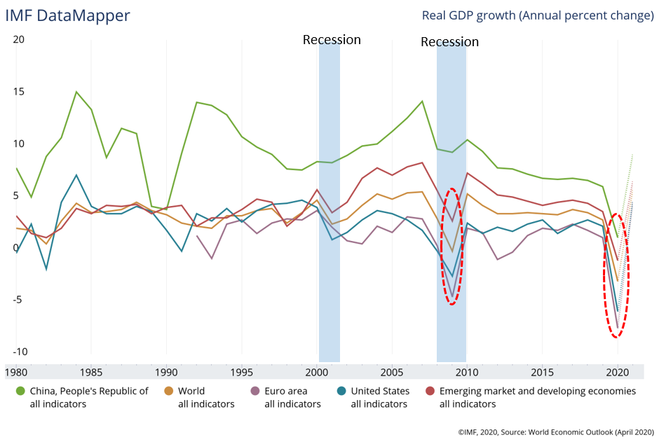
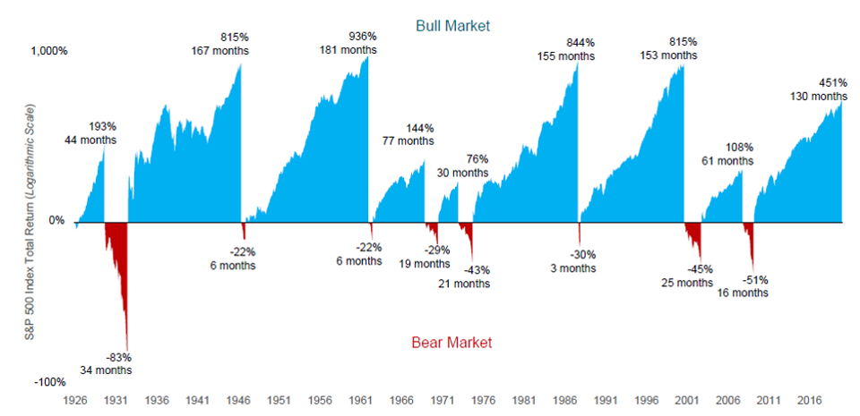
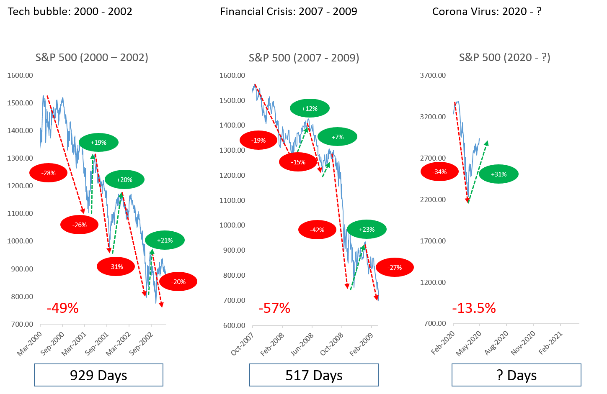
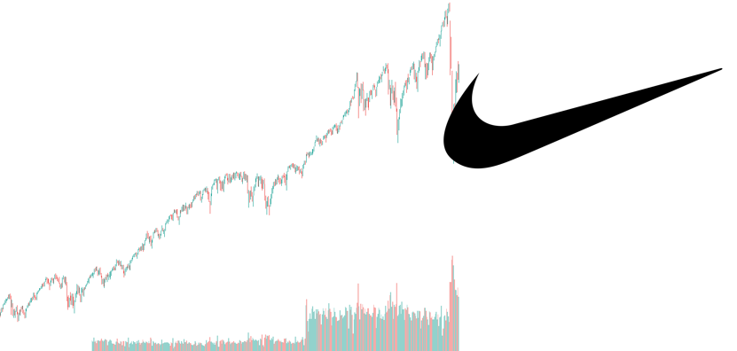

Learning from the past: Analysis of current situation
Did the stock market bottom out? That's the billion-dollar question on everyone's mind. For so long, I hear people telling me, "BUY THE DIP,"" BEST TIME TO GET IN," "BUY LOW SELL HIGH,"; you get my drift.
In the past few months, the stock market has indeed fallen steeply, but it has partially bounced back numerous times over the same period. This ongoing volatility confuses many investors and led them to think cheap can get cheaper.
In this article, I am going to talk about how the economy will react using historical data from past recessions and a forecast of recovery landscape.
"In financial markets, the hindsight is forever 20/20, but foresight is legally blind. Thus, for most investors, market timing is a practical and emotional impossibility" — Benjamin Graham.
The biggest mistake that most people make is to attempt timing the market and pray for instantaneous profit. Once the market moves the other direction, they panicked and sold it at a loss.
Investors make money on the stock market by buying shares in companies they believe will perform well in the long term, then waiting to see what happens. That's not as fun as guessing that a company has bottomed out and that it will recover soon, allowing you to (theoretically) make a quick buck. The goal, however, isn't proving that you're smarter than everyone else in the short term — you're almost certainly not. It's about investing for your future and your retirement.
Let's have a quick recap of what happened to the market since its recovery from our last recession.
I believe this picture itself is pretty self-explanatory. The S&P 500 index reached its all-time high on Feb 19th, 2020, in the bull market that started from the low point on Mar 9th, 2009 – from USD 666.79 to USD 3,386.15.
What happened in 2020?
With Biden winning, less ambitious fiscal policy is expected. In that scenario, bonds will continue to rally as debtholders have less to fear from the higher inflation expectations that would follow from a faster economic recovery and increased debt issuance.
From Jan 2nd – Feb 19th, the S&P500 jumped upwards by 4%, which is a pretty good return year-to-date. This record jump helped S&P to reach a record high of USD 3,386.15. Then from Feb 20th, it became increasingly clear that the virus is spreading outside of China into other large economies such as South Korea, Japan, Europe, and the United States.
From Feb 20th – Mar 23rd, the global stock market started to wake up to the threat of COVID-19 and realize the damaging effect it will have on the global economy as the world's most advanced countries began shutting down their economy and started enforcing lockdowns. The market realizes that the global economy is entering a recession. Businesses closing down, millions of job loss, supply chain disrupted, oil prices crashed, and banks faced defaults and losses on their loans.
In response, the S&P500 declined 34% from the Feb 19th peak, falling to USD 2,237.40 on Mar 23rd. The market loses more than 1/3 of its value in a month, that's the fastest decline ever in history. March 2020 also made history as the most volatile month for the S&P.
Since then, the market rallied, fuelled by optimism that the government is bringing the COVID-19 under control. The trillion-dollar economic stimulant package from the Congress and the feds usage of monetary tools enable the stock market to rebound and rally by 31% and cut overall losses to just 13.5%.
This generally summed up on what has transpired so far in 2020. So the question remains, will the stock market continue to rally from here and get back to its upward trajectory before the virus happen? Or will there be another sell-off pushing the stock market to a new low?
History

Gross Domestic Product (GDP) is one of the most common indicators we used to track the health of a nation's economy.
From this chart, we can see that not only that, this situation itself is on a higher magnitude and also broader in terms of geographic scope as compared to our last two recession. It kind of make sense if you think about it, many industries are forced into a halt and countries having lockdowns.
Until we know how quickly and thoroughly the public health challenge will be met, it is virtually impossible for economists to predict the end game of this crisis.
Thus far, the US has failed miserably to contain the outbreak despite having the world's most advanced health system. Americans will find it exceedingly difficult to return to economic normalcy until a vaccine becomes widely available, which could be a year or more away. The US treasury department has also predicted the unemployment rate to reach a record high of 20%.
At the same time, companies are struggling on many levels. When the crisis began, companies relying on manufacturing in China faced supply disruptions as factories closed. Mattel (NASDAQ:MAT) and Hasbro (NASDAQ:HAS) are good examples, as around 70% of all toys are manufacture in China.
As the crisis expanded well beyond China, so did the problems. For one, Nike(NYSE:NKE), which closed shops in China earlier in the crisis, now has shuttered stores in North America and elsewhere.
When the crisis was limited to China, the idea was that companies without dependence on the country would be safe havens. Today, companies operating just about anywhere will face the challenges of supply disruptions, closed shops, and fewer customers.
Even after an economic restart, the damage to businesses and debt markets will have lingering effects, especially considering that global debt was already at record-breaking levels before the crisis began.
Just for reference, as of Dec 31st, 2018, the global debt has reached USD 188 trillion. In comparison, there is only approximately USD 37 trillion cash in circulation; this includes all physical money and the money deposited in savings and checking accounts.
The United State has about USD 23.68 trillion of debt to date, which also translate to 109% of its GDP.
It is clear that much more will need to be done.
Comparing to the previous recession

Now, it is crucial to differentiate a correction from a bear market
A correction is Wall Street's term for an index like the S&P 500, the Dow Jones Industrial Average, or even an individual stock that's fallen 10% or more (but less than 20%) from a recent high.
A bear market occurs when the index or stock falls 20% or more from the peak for a sustained period.
Corrections are common during bull markets, and are considered normal and even healthy. They allow markets to remove speculative froth after a big run-up and give investors a chance to buy stocks at lower prices.
Since 1974, in the S&P 500, there had been 22 corrections and 4 bear markets(1980, 1987, 2000, and 2007), not including the current near-bear market. That works out to corrections becoming bear markets a little less than 18.2% of the time. Nobody can predict with any degree of certainty whether a correction will reverse or turn into a bear market.
Let's not be too far off and just zoom clearer into what happened in the last two recession.
During the tech bubble, it took 929 days to decline by 49% and reach its bottom. The financial crisis in 2008 took 517 days to decline by 57%.
GaLooking at our current situation, from 24 to Feb 28th, stock markets worldwide reported their largest one-week declines since the 2008 financial crisis, thus entering a correction.
On Mar 9th, most global markets reported severe contractions, mainly in response to the COVID-19 pandemic and an oil price war between Russia and the OPEC countries led by Saudi Arabia.
Three days after that considerable drop, stock across Europe and North America fell more than 9%. All three Wall Street indexes fell more than 12% when the markets re-open on Mar 16th. At least one benchmark stock market index in all G7 countries and 14 of the G20 countries has declared to be in the bear markets.
The day of the peak is Feb 19th, 2020, so it hasn't even been that long yet. Historically speaking, it would at least take a couple more months or a year for the stock market to reach its true bottom.
Let's look at the path that it takes from peak to bottom. Notice the stock market does not nosedive in a straight-line from peak to bottom. It declines to reach a first bottom and rebounds to a smaller extent of a previous decline. Declines again to arrive at a second bottom, then it rebounds again to the smaller extent of the prior fall. This decline and rebound happen for multiple rounds before the stock market capitulates to reach its true bottom.
This is normal; in other words, if the stock market drops significantly, you would expect a rally before the market drops even further to reach a new bottom.
By all accounts, this corona virus-induced recession is broader in terms of geography and more serve compared to the previous recessions of the century. It has only declined by only 13.5% so far. The stock market is rallying right now after crashing in March. But that is expected, like I mentioned above – the cycle. It is highly plausible that we are experiencing the first round of decline and rally before the market precedes the second round of decline to reach a new bottom.
Why does it take so long for the market to react?
I believe that there are two main reasons for this question.
Firstly, information comes out over time; our data comes out on a weekly/monthly basis. GDP data comes out every three months, US company report earnings every three months, European company report earnings every six months and in between we have a variety of other economic data being published by different agencies.
Investors in the stock market based their decisions on these data. Without these data, they would be literally shooting in the dark. However, these data come out over the course of a couple of hundreds of days as they measure real business activities over this period. As these data are measured and released, the investor will then suggest the state of the economy and the stock prices react accordingly.
The other reason is; it takes that long for the economy to run its course. The stock market prices reflect just how much investors are willing to pay to invest in different companies, follow the actual economic activity — how much money businesses are making.
All of you would agree with me that the economy doesn't go from growth to recession and then back to growth in just a couple of days. You can't turn around the economy overnight; it takes time to complete the cycle. It requires that much time to turn around the economy.
In our current situation, we are still extremely early in the game in the coming months as the economy continues to absorb damage, and as factual data of these damages come to light. It is highly plausible that the stock market will adjust accordingly and reach a new bottom.
Is this imminent?
While the fact remains that no one knows this answer with any certainty, I'm willing to publicly state that, no, I don't believe the stock has market bottomed out yet. There are just too many signs showing that this is imminent.
For one, we still know very little about COVID-19 itself. Researchers still do not have a concrete treatment option in place or antiviral vaccine, of which many are being studied.
I would also argue that this virus acts as an accelerant rather than a sole core reason behind the crash.
During 2019, the IMF reported that the world economy was going through a 'synchronized slowdown,' which entered into its slowest pace since the 2008 financial crisis. 'Cracks' were showing in the consumer market as global markets began to suffer through a 'sharp deterioration' of manufacturing activity.
Global growth was believed to have peaked in 2017, when the world's total industrial output began to start a sustained decline in early 2018.
Before this current plunge, there was no dearth of voice arguing that stocks were massively overvalued and that bonds and interest rates have been kept way too low by central banks that still haven't returned to normal for more than a decade — since the last major financial crisis.
One thing that I learned about the modern financial market is staying calm — we do not tend to do that. Yet it is undeniable that markets spent the whole of 2019 in an upward drift with little to none sharp movement.
AI in play for better or worse?
Markets today are a strange mix of people and programs, traders and algorithms, large institutions and individuals, active and passive funds. You name it; we probably have it.
There is no clear data on how much real activity is triggered by humans active decisions. Just for estimation purposes, J.P. Morgan place computer-driven trading at more than 75% of all their trades.
These algorithms not only initiate trades based on market sentiments and news, but also feed on themselves when markets start moving swiftly down. They rely on past patterns and on how stocks, bonds, and a host of assets have performed over time and relativity to each other.
The longer the markets stay calm, the more hair-trigger those programs become. Market declines are a constant, and the longer markets go without significant corrections, the more algorithms and forecasts start to expect them.
Given that the last major bout of selling happened at the end of 2018, the entire financial system acts like a tinder box waiting for a spark. If it hadn't been the virus, it would have been something else.
Another force at play is the active decision then made by real people as they scramble to assess worst-case scenarios. This explains why the fall is so steep and sharp.
The good news is that markets are most likely to stabilize and improve before the worst of the virus passes because markets will have priced in the worst before the worst actually happens.
Recovery Landscape
There are various forms on how this could potentially work out, but I do believe that it is likely to be a swoosh-shape recovery shaped like the "Nike" logo. While many analysts are projecting a V-shaped recovery, it's probably too optimistic with its quick bottom and steep comeback characteristic.
April's job report showed that the US economy lost 20.5 million jobs last month (bringing the total to 33 million) and the unemployment rate spiked to 14.7%. While hiring is likely to return in May as some states begin to slowly re-open their economies, it will be tentative at first. Consumer remains anxious about returning to everyday life given the health concern, this translate to low-demands.
With social distancing, consumer angst, travel restrictions, and the depressing effects of mass unemployment mean that economic activity and employment will certainly not be exhibiting a V-shaped recovery.
Simply put, a Swoosh recovery is narrated as a sharp move downwards, then a partial bounce and long-term crawl back up. That kind of comeback would be similar to what happened in the wake of the '08 Great Recession, which didn't feel like much of a recovery initially.
The base concept for this recovery depends widely on robust and sustained fiscal and monetary policies put forward by the federal government. This is with the assumption that the economy will open in a few weeks, and the virus will become more controlled with adequate stimulus measures in place.
The income hole created by temporary or permanent job losses will cause consumer behavior to change. Re-opening of economies will not represent a quick return to "normal" — social distancing practices, ongoing concern over health, and the desire for greater precautionary savings will partially offset the release of pent-up demand.
On the business side, increased uncertainty over the outlook, post-crisis overcapacity — particularly in hard-hit sectors, and high debt levels will restrain the rebound in capital spending. While output will surely bounce as lockdowns are being lifted, the case for a sustained and robust consumer- or business-led recovery is limited.
GDP is expected to peak during Q3/Q4 as consumer gear up for holidays and once this situation is deemed as normalcy. This will give way to progressively smaller gains through 2021— resulting in "swoosh-shaped" recovery.
It's also important to remember that April's stock surge does not mean the worst is over. It is best to see the market and economy as a different entity to see the bigger picture. The market is now saying things will be better six months from now. That does not necessarily translate as things being back to normal.
The sad reality is that in any recovery, some people and companies will be left out — much like the aftermath of The Great Recession. There are so many psychological barriers that people have to overcome before things return to normal.
Disclaimer: Any views or opinions represented in this article are personal and do not represent those of people, institutions or organizations that the owner may not be associated with in a professional or personal capacity unless explicitly stated.All content provided in this article is for informational purposes only. The owner will not be liable for any errors or omissions in this information nor for the availability of this information.